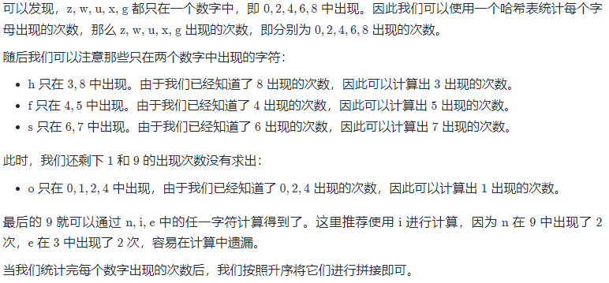

423. 从英文中重建数字
给你一个字符串 s ，其中包含字母顺序打乱的用英文单词表示的若干数字（0-9）。按 升序 返回原始的数字。
示例 1：
输入：s = "owoztneoer"
输出："012"
示例 2：
输入：s = "fviefuro"
输出："45"
提示：
1 <= s.length <= 10<sup>5</sup>s[i]为["e","g","f","i","h","o","n","s","r","u","t","w","v","x","z"]这些字符之一s保证是一个符合题目要求的字符串
Solution
class Solution {
public:
string originalDigits(string s) {
unordered_map<char, int> c;
for (char ch: s) {
++c[ch];
}
vector<int> cnt(10);
cnt[0] = c['z'];
cnt[2] = c['w'];
cnt[4] = c['u'];
cnt[6] = c['x'];
cnt[8] = c['g'];
cnt[3] = c['h'] - cnt[8];
cnt[5] = c['f'] - cnt[4];
cnt[7] = c['s'] - cnt[6];
cnt[1] = c['o'] - cnt[0] - cnt[2] - cnt[4];
cnt[9] = c['i'] - cnt[5] - cnt[6] - cnt[8];
string ans;
for (int i = 0; i < 10; ++i) {
for (int j = 0; j < cnt[i]; ++j) {
ans += char(i + '0');
}
}
return ans;
}
};
首先我们可以统计每个字母分别在哪些数字中出现：
